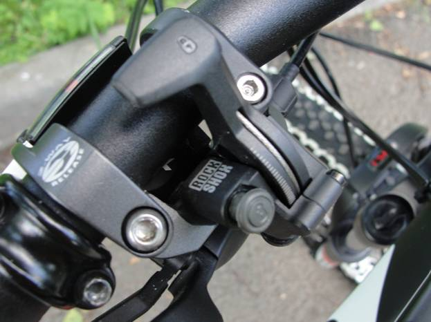

Всё о велосипедах
Чем больше всевозможных регулировок амортизационной вилки велосипеда, тем лучше. Ведь вы сможете настраивать различные параметры, подстраиваясь тем самым под дорогу, по которой вы катаетесь. Например, если вы на горном хардтейле выехали из жесткого бездорожья на асфальтированный участок дороги, то блокировка хода амортизатора поможет вам сэкономить силы благодаря уменьшению раскачки велосипеда при педалировании. Регулировки бывают следующие: жесткости пружины, скорости сжатия, скорости обратного хода, блокировка хода.
На более дорогих моделях некоторые регулировки вилки могут выноситься на руль, что упрощает подстройку амортизаторов прямо во время движения.
Более подробно об амортизационных вилках велосипеда можно узнать из следующего видео.